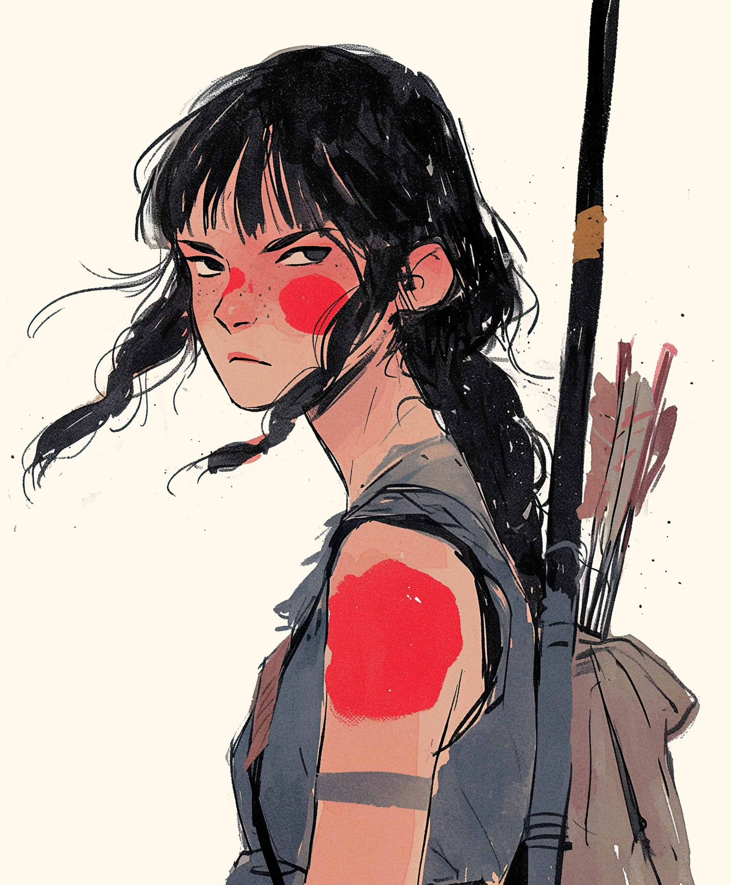

화살 세 개가 남았다. 의식까지 이틀. 붉은 칠을 받을 자격이 있음을 증명할 단 한 번의 기회.
[Three arrows left. Two days until the ceremony. One chance to prove herself worthy of the red paint.]
새벽부터 짊어진 화살통처럼 전통의 무게가 그녀의 어깨를 무겁게 짓눌렀다. 각각의 화살은 귀중했다 - 고대 삼나무로 손수 만들어졌고, 지난 보름달 때 모은 매의 깃털로 날개를 달았다. 화살촉은 각기 달랐다: 흑요석 하나, 강철 하나, 유리 하나. 나무와 힘줄에 묶인 과거, 현재, 그리고 미래.
[The weight of tradition sat heavy on her shoulders like the quiver she’d carried since dawn. Each arrow was precious – handcrafted from ancient cedar, fletched with hawk feathers gathered during the last full moon. The arrowheads were different: one obsidian, one steel, one glass. Past, present, and future bound in wood and sinew.]
의식의 물감이 발라진 팔이 욱신거렸다. 그녀의 뺨에 있는 것과 똑같은, 완벽한 진홍색 원이었다. 임시 표식들. 시험 표식들. 그것은 그녀가 성공했을 때에만 영구적인 것으로 바뀔 것이며, 신성한 약초와 ‘이전 시대’에서 남은 마지막 색소로 그녀의 피부에 새겨질 것이다.
[Her arm ached where the ceremonial paint had been applied, a perfect circle of crimson that matched the one on her cheek. Temporary marks. Trial marks. They would become permanent only if she succeeded, burned into her skin with sacred herbs and the last remaining pigments from the before-time.]
시험장이 대지의 상처처럼 그녀 앞에 펼쳐져 있었다. 갈라진 콘크리트에서 뒤틀린 금속이 돋아났고, 자연이 천천히 고대인들이 지은 것을 되찾아가고 있었다. 이곳은 옛 세상이 죽은 곳이자, 그녀의 부족이 다시 태어나기로 선택한 곳이었다.
[The trial grounds stretched before her like a wound in the earth. Twisted metal sprouted from cracked concrete, nature slowly reclaiming what the ancients had built. This was where the old world had died and where her people had chosen to be reborn.]
바람이 그녀의 땋은 머리를 흔들며 세이지와 녹슨 쇠의 향을 실어왔다. 첫 번째 표적 - 총알 탄피로 만든 풍경이 삼백 보 밖에서 금속성 노래를 울렸다. 두 번째는 구리선으로 감싼 사슴 해골로, 할머니가 “크레인"이라 부르던 것의 껍데기에 매달려 있었다. 마지막 표적은 가장 신성했다: 대화재의 손길이 닿지 않은 거울이 떠오르는 태양을 비추고 있었다.
[A wind stirred her braids, carrying the scent of sage and rust. The first target – a wind chime made of bullet casings – sang its metallic song three hundred paces distant. The second, a deer skull wrapped in copper wire, hung from the husk of what her grandmother called a "crane.” The final target was the most sacred: a mirror, untouched by the great burning, reflecting the rising sun.]
불가능해 보이는 세 발의 사격. 옛 방식이 새로운 세상을 지킬 수 있다는 것을 증명할 세 번의 기회.
[Three impossible shots. Three chances to prove that the old ways could protect the new world.]
그녀는 첫 번째 화살을 꺼냈고, 흑요석 화살촉이 검은 별처럼 빛을 받아 반짝였다. 어머니의 활은, 그녀가 줄을 뺨까지 당기자 마치 살아 있는 것처럼 삐걱거렸다. 풍경이 춤을 추었고, 각각의 탄피는 과거의 폭력을 증명하고 있었다.
[She drew her first arrow, the obsidian tip catching the light like a black star. The bow, her mother’s bow, creaked like a living thing as she pulled the string to her cheek. The wind chime danced, each casing a testament to the violence of the past.]
숨을 들이쉬고. 멈추고. 쏜다.
[Breathe in. Hold. Release.]
화살이 아침 공기를 가르며 정확하게 날아갔다. 풍경이 음악처럼 쏟아져 내리다가, 이내 조용해졌다. 첫 번째 표적 완료.
[The arrow flew true, splitting the morning air. The chime erupted in a cascade of music, then fell silent. One target down.]
해골은 더 까다로웠다. 태양이 더 높이 떴고, 그 눈부신 빛이 구리선을 불꽃 같은 실로 만들어버렸다. 그녀는 강철 화살촉을 선택했다. 옛 기술과 주워 모은 재료의 결합이었다. 활의 나무가 그녀의 손가락 아래서 맥박치는 것 같았다. 마치 한때 자신이 나무였던 것을 기억하는 듯했다.
[The skull proved trickier. The sun had risen higher, its glare turning the copper wire into threads of fire. She chose the steel-tipped arrow, a marriage of old craft and scavenged materials. The bow’s wood seemed to pulse beneath her fingers, as if remembering the tree it had once been.]
이번에는 화살을 놓자 바람에 살짝 휘어졌다. 그녀의 심장이 멎는 것 같았다 - 하지만 강철 화살촉이 해골의 눈구멍을 관통하며 폐허를 울리는 공허한 소리와 함께 과녁을 맞췄다.
[This time, when she released, the arrow curved slightly in the wind. Her heart stopped – but the steel tip found its mark, threading through the skull’s eye socket with a hollow sound that echoed across the ruins.]
한 발의 화살이 남았다. 아침 이슬처럼 맑은 유리 화살촉이었다. 거울이 육백 보 밖에서 기다리고 있었고, 그 표면은 도시의 무덤 속 빛의 웅덩이 같았다. 이 한 발이 모든 것을 결정할 것이다: 부족 내 그녀의 위치, 붉은 칠을 할 자격, 그리고 다시 태어난 세상의 수호자로서의 그녀의 미래.
[One arrow left. The glass-tipped arrow, clear as morning dew. The mirror waited, six hundred paces away, its surface a pool of light in the urban grave. This shot would determine everything: her place in the tribe, her right to wear the red paint, her future as a guardian of their reborn world.]
그녀는 화살을 시위에 걸고 당겼다. 피로에 떨리는 근육이었다. 이제 거울은 태양뿐만 아니라 그녀의 얼굴도 비추고 있었다 - 피부의 핏방울 같은 시험용 칠, 결의에 찬 어두운 눈동자. 그 순간, 그녀는 자신의 조상들이 보았을 모습을 보았다: 잃어버린 것과 가능성 사이의 다리가 되어.
[She nocked the arrow and drew back, muscles trembling with fatigue. The mirror reflected not just the sun now, but her own face – the trial paint like drops of blood on her skin, her eyes dark with determination. In that moment, she saw herself as her ancestors might have: a bridge between what was lost and what could be.]
유리 화살이 날아갔다.
[The glass arrow flew.]
시간이 겨울의 꿀처럼 늘어졌다. 화살이 빛을 받으며 회전하여 무지개를 뿌렸다. 심장 한 번 뛸 동안, 화살은 마치 대지와 하늘 사이에, 과거와 미래 사이에 멈춰 있는 것처럼 보였다.
[Time stretched like honey in winter. The arrow spun, catching light, throwing rainbows. For a heartbeat, it seemed to hang suspended between earth and sky, between past and future.]
거울이 얼음이 깨지는 것 같은 소리를 내며 산산조각 났다. 수천 개의 파편이 태양빛을 받아 공기를 다이아몬드 가루로 만들었다.
[The mirror shattered with a sound like breaking ice. A thousand fragments caught the sun, turning the air into diamond dust.]
그녀는 여전히 활을 든 채 움직이지 않고 서 있었고, 장로들이 폐허 속 은신처에서 모습을 드러냈다. 헬리콥터 터빈 날개로 만든 그릇에 영구 안료를 담아 들고서, 할머니가 먼저 다가왔다.
[She stood motionless, bow still raised, as the elders emerged from their hiding places among the ruins. Her grandmother approached first, carrying the permanent pigments in a bowl made from a helicopter’s turbine blade.]
“네가 자신의 가치를 증명했다,” 노파가 자부심이 묻어나는 거친 목소리로 말했다. “붉은 칠을 받을 자격이 있다. 유리 화살이란 칭호도 마찬가지로.”
[“You have proven yourself,” the old woman said, her voice rough with pride. “The red paint is yours, as is the title of Glass Arrow.”]
그날 밤, 성스러운 약초가 타오르고 영구 물감이 칠해지는 동안, 그녀는 자신의 세 개의 화살을 생각했다: 그들이 공경하는 과거를 상징하는 흑요석, 그들이 살아남은 현재를 상징하는 강철, 그리고 그들이 만들어갈 미래를 상징하는 유리. 각각의 화살은 정확히 날아가 과녁을 맞췄다.
[That night, as the sacred herbs burned and the permanent paint was applied, she thought of her three arrows: obsidian for the past they honored, steel for the present they survived, and glass for the future they would build. Each had flown true, each had found its mark.]
그리고 이제, 그 화살들처럼 그녀도 부족의 이야기 속에서 자신의 자리를 찾았다.
[And now, like those arrows, she too had found her place in the story of her people.]